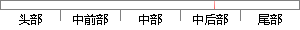

arctan(cosα · tanβ)，显然当 α 越大时，误差?
片段位置图

相似结果|
相似片段 1：( )=arctan arctan( tan )cos( )A A?? ?? ?测(4-6)49由式(4-6)可以看出，功分器的幅度不平衡会引起六端口网络的鉴相误差，当幅度不平衡越大时，鉴相准确度将越小。
相似片段 2：推导得到以下跟踪误差表达式：3 3cos sin( arctan(cos tan ))arcsin( )cos(arctan(cos tan
相似片段 3：? ? ? ? ? ? ??? ? ?? ?? ??? ? ? ??（2-15）arctan(sin(arctan( ))tan(arccos(cos sin )))?? ? ?（2-16）由上述几何模型和公式可以看出，方位角轴在东西方向倾斜后，整个跟踪器面板都将在一个倾斜的平面上运动，此时跟踪过程中方位角和高度角的旋转变化都会给跟踪器带来跟踪误差。
|
※ 片段修改建议 ※
近似词参考：- 显然：明显
- 误差：偏差
系统自动生成语句： arctan(cosα · tanβ)，明显当 α 越大时，偏差?
注：本片段修改建议为系统自动生成，仅供参考。